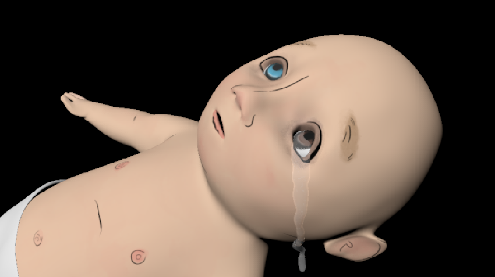
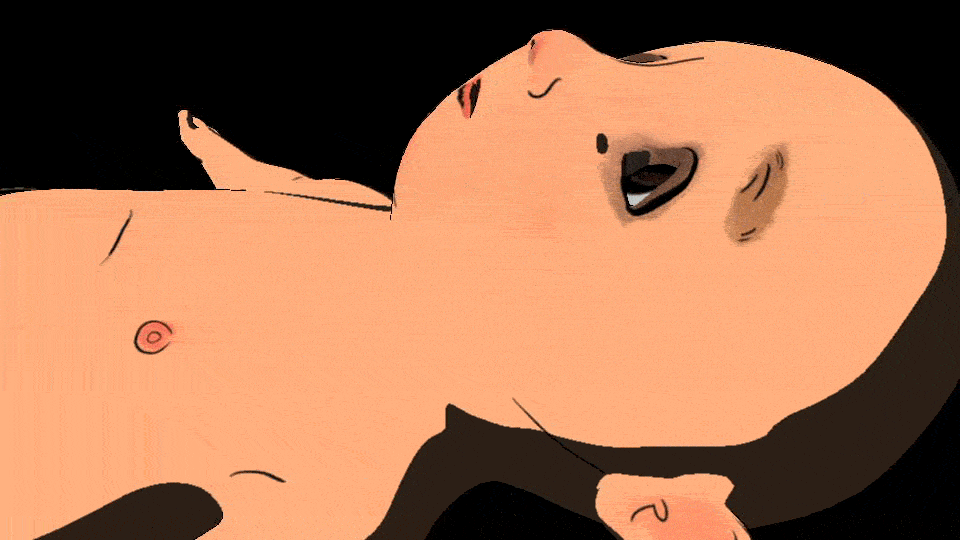

Only Love A Man's Ever Known
I. Introduction
Wow, words.
II. FX
I did a lot of water simulation with Bifröst.
One of the water simulations I did was getting tears to fall down baby Reggie's face in the last scene.
Initially I tried to accomplish this by creating an emitter around the size of the eyeball inside the eye socket and creating a collider out of the rest of the body.

Caption.
In the next couple of iterations, I placed an emitter at the inner corner of the eye and made the eyeball a collider as well. I then varied the amount of particles emitted and time to stop emitting to get a more teardrop-like effect.

Caption.
III. Modeling
I also did some basic asset modeling and UV mapping.